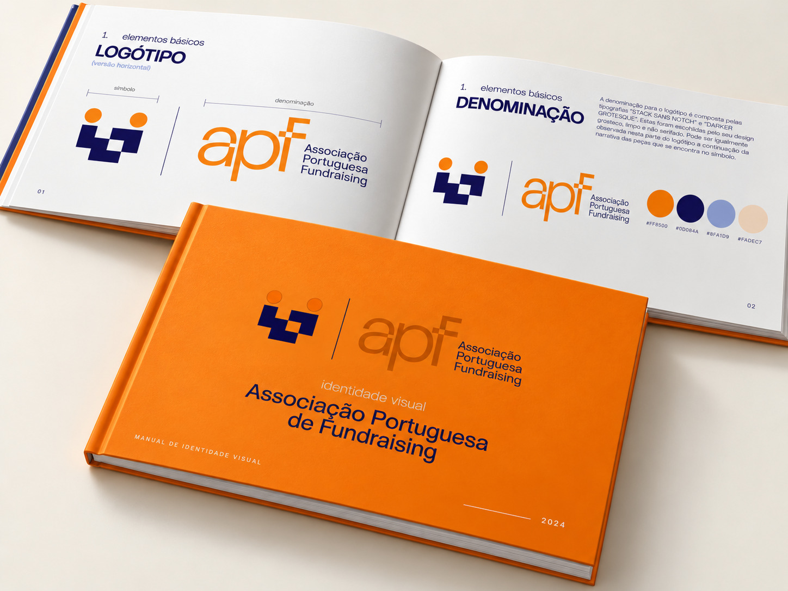

A Associação Portuguesa de Fundraising apresenta o seu novo logótipo, inspirado no papel que pretende assumir no setor: ser a peça que faltava e uma ponte entre corações generosos e projetos transformadores.
Desenvolvido por Marcos Rodrigues, o símbolo representa uma ponte e duas pessoas que se ajudam, através de diferentes peças que traduzem a ligação entre pessoas, organizações e causas.


Este trabalho foi realizado pro bono, enquanto estudante universitário. A APF agradece ao Marcos a sua generosidade, empenho e dedicação na criação de uma identidade que representa a missão e o futuro da Associação.
Acompanhe o trabalho de Marcos Rodrigues
Para conhecer outros projetos ou entrar em contacto com o autor da identidade visual: